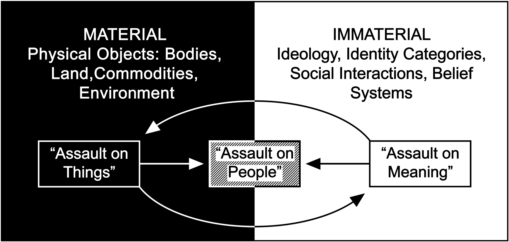

In the proposed installation Rinderpest Collectif, I position the interactions of material objects1 as sites of immaterial production, investigating the possibility that immaterial systems of meaning (ideologies, identity categories, social interactions, beliefs systems) are emergently produced by networks of material objects (physical things such as bodies, land, commodities and the environment), rather than through the simple summation of those objects’ traits.2 This suggests that immaterial meaning is the result of relationships amongst physical objects and does not originate in individual objects themselves. I explore such immaterial emergence in Rinderpest Collectif utilizing strategies of assemblage ––– works in the installation are composed through the synthesis of readymade forms to emphasize the interactions amongst objects, re-presenting and reifying links between the natural world, the material human world and its immaterial social structures.
Foregrounding the relationships between objects can reorient a viewer’s perspective, encouraging consideration of the network as a whole. The resultant effect is potentially two-fold:
i.) Material objects–––nodes in the network–––may become ontologically defined by their interactions with other nodes and participation in the larger network;
ii.) Simultaneously, the material network itself may become the focal object, making the relationships of its nodes intra-actions–––occurring within rather than between.3
These perspectival shifts mimic an ecological lens, one through which individual organisms are defined by their interactions within a larger system, and conversely, the larger system is defined as a product of the intra-actions between its component parts. Like ecosystems, the bounds of each material network are non-existent: every physical object can be connected to all others through chains of material intra-actions. As a result, these networks are imbricated with and implicated in ecosystems, making the ecological lens a useful and necessary tool in my work.
Because all physical objects are connected through their material interactions, it is important to distinguish between localized networks of material relations and the super-network these overlapping, smaller networks collectively form. In this statement, I will refer to localized networks as collectifs.4
The investigation of immaterial emergence from material relations could be realized through the study of myriad collectifs, however some are more salient than others. European colonialism, heavily laden with material (ex)change and social consequences, is well suited for consideration through our “ecological lens,” but to engage with this collectif we must first define the respective boundaries of its material and immaterial elements.
According to Hussein A. Bulhan’s “Stages of Colonialism in Africa: From Occupation of Land to Occupation of Being,” European colonial actions may be categorized into three “assaults” (242):
i.) on the world of things;
ii.) on the world of people; and
iii.) on the world of meaning.5
This division conveniently falls along a spectrum ranging from material “things” to immaterial “meaning,” and situates people between the two poles in their capacity for both material (physical) and immaterial (ideological or social) interaction. Yet, Bulhan presents these assaults as outcomes of racial thinking, asserting that immaterial ideology determines material assaults on people and things while failing to incorporate this racial ideology (a form of “meaning”) into his framework.6 Racial ideology undeniably plays a key motivating role in European colonial action, but it also forms an important valence in the assault colonial systems carry out on the world of meaning. In light of this, I aim to build on Bulhan’s work by demonstrating the cyclicality his linear framework fails to account for: immaterial (racial) ideology is causal of material relations (relegation to certain forms of work, goods and services, ways of living, etc.) but it is also produced and reproduced by these same material interactions (fig. 1). To accomplish this, I have identified forms tied to the introduction of the rinderpest virus in Northeastern Africa, and will position their material relationships in my installation as an entry point into the immaterial colonial social structures they produced.

Figure 1. Bulhan’s three “Assaults of Colonialism,” situated along the material-immaterial spectrum. Arrows demonstrate my proposed relational revision.
In 1887, Italian colonists inadvertently brought the rinderpest virus to the Horn of Africa via a herd of imported Indian zebu cattle.7, 8 Though unintentional, this introduction constituted one of the most effective colonial assaults on people and things in the 19th century. The virus spread rapidly among populations of domestic and wild grazing mammals, killing over 90% of infected herds, and reached the Atlantic coast in under five years.9 In its wake, millions of people died from starvation and illness contracted due to malnutrition. Rinderpest eventually spread to the continent’s southern tip, devastating native communities and facilitating the subsumption of survivors into exploitative colonial labor markets and social systems.10 With grazers largely absent from grasslands, great swaths of the continent grew into bush. The tsetse biting fly, endemic to Central African bushland, benefited from this expanded range and trailed the course of rinderpest as far South as the Transvaal region of South Africa. These flies carried trypanosomes, unicellular parasitic organisms that cause “African sleeping sickness” in humans and a similar disease in other mammals.11 The spread of sleeping sickness across the African subcontinent caused a secondary wave of death, and continued to repress the recovery of agricultural communities from rinderpest by rendering unsafe millions of square miles of once disease-free grazing land.12, 13, 14 In its expanded range, cycling among thousands of newly-impoverished African colonial subjects, the disease would continue to swell into epidemics throughout the 20th century.15 Towards the end of the century, scientists and African agriculturalists developed a family of fabric traps to study and control tsetse flies.16 These traps exploit the flies’ instinctual responses to olfactory cues with a liquid cocktail bait that mimics the smell of their flies’ primary prey. The three-part cocktail is composed of two organic liquid compounds (1-octen-3-ol, and acetone) and cattle urine, primarily sourced from African zebu.17
African and Indian Zebu share more than a breed. The African zebu urine used to reduce the incidence of sleeping sickness in East Africa has an analog in the cattle’s ancestral home: according to the Hindu ayurvedic medical texts, Indian (zebu) cows’ urine, called gomutra, is believed to have purifying properties and is an important ingredient in a variety of medicines.18 By performing these parallel roles, cow urine allows the ouroboric series of material relations in the rinderpest collectif to fold back onto itself, modelling the larger immaterial-material cycle of which it is a part. Drawing on these use-conventions, I position gomutra in my installation to enact different modes of purification (preservation, eradication, transformation) on a variety of objects in this historical collectif. Additionally, the liquid’s subtle smell will permeate the gallery, reasserting the ontological implications of the collectif by unifying the viewer's read of each independent work.
The intentional assaults of European colonialism in East Africa facilitated by the rinderpest epizootic included: the capture of land through force or deception; the control of law, commodity production, and commerce; and the containment of people within physical boundaries, racial-cultural categories, and exploitative modes of servitude.19, 20, 21 These strategies–––capture, control, and containment–––may be described as colonial “trap dynamics,” conceptually rich for material analogy and reification. The works in this installation reference a small suite of objects from the collectif in which Italian colonialism and the rinderpest virus are situated, including the urine of Zebu cattle, South African gold mines, African tsetse biting flies, and Nzi fly traps.
The specific material properties and intra-actions of these objects propose a reflection of the “trap dynamics'' in the immaterial colonial systems they produced. The works derived from these forms aim to address the colonial histories entangled with the rinderpest collectif by using material relationships to evoke notions of infestation, purification, preservation, and entrapment. The emergence of immaterial “meaning” from material systems is present through reference to the historical systems of colonialism, racial capitalism, cultural cleansing and apartheid generated by the rinderpest collectif. Within the gallery, the viewer’s experience will build on this historic emergence to generate novel “meaning”: performing intellectual synthesis to construct a subjective narrative from the readymade forms present in the work. My hope is that the material relationship I’ve produced will underscore the ontological implications of participation in these networks for each physical object, the necessarily expansive and expanding nature of the networks referenced, and the cyclicality of relationships both within the material collectif, and between its material and immaterial components.
Notes
1 The term “object” is deployed here in the broadest possible sense, to denote any thing. A “material object” thus describes any physical thing: a fly, a human, a proton, a field, the weather, etc.
2 My invocation of philosophical emergence (when a composite entity demonstrates properties that are greater, in some sense, than the sum of those of its component parts) and several other ideas in this statement are adopted from Michel Callon and John Law’s essay Agency and the Hybrid Collectif (Duke University Press, 2003). The essay attempts to demonstrate that agency, and therefore agents, are the emergent products of material networks.
3 The term “intra-actions” is borrowed from physicist, historian, and feminist scholar Karen Barad. Barad’s substitution of the prefix intra- (within) for inter- (between) is based on an ontological extrapolation of findings in the field of particle physics, which–––she suggests–––disprove the possibility of any physical object being truly “discrete.” Among the discoveries she cites is the phenomenon known as “quantum entanglement”: following physical interaction, two particles may become “entangled,” meaning one member of the “quantum pair” will determine the character of its partner across conventional limits of space and time. For more on her work, see “Diffracting Diffraction: Cutting Together-Apart,” Parallax, 20 (3), 2014, 168-187.
4 Like “emergence”, this french term is borrowed from Callon and Law’s Agency and the Hybrid Collectif (p. 11).
5 Bulhan, Hussein A., “Stages of Colonialism in Africa: From Occupation of Land to Occupation of Being,” Journal of Social and Political Philosophy. 3, 2015, 242.
6 Bulhan, Hussein A., “Stages of Colonialism in Africa,” 242.
7 Pearce, Fred, "Inventing Africa,” New Scientist. 167, 2000, 30.
8 The exact location of this ship’s arrival is unclear, but the majority of sources claim it moored at the ports of Massawa. For more, see Spinage, Clive A., “The Italian occupation of Massawa and the supposed origin of the African Rinderpest panzootic,” African Journal of Ecology, 55, 2017.
9 Pearce,"Inventing Africa”, 30.
10 Crush, Johnathan, “Swazi migrant workers and the Witwatersrand gold mines 1886-1920”, Journal of Historical Geography, 12, 1986, 28.
11 Pearce,"Inventing Africa”, 2-3.
12 Ibid.
13 Bouyer, Jérémy, et al., “The Ethics of Eliminating Harmful Species,” BioScience, 69 (2), 2019, 125.
14 Citing the threat of infection, colonial governments in the early 20th century capitalized on sleeping sickness by forcing emigration from regions they deemed “at risk” in order to expropriate land from majority-native communities. See Jahnke, Hans E., Tsetse flies and livestock development in East Africa: a study of environmental economics. Weltforum Verlag, 1976, 32.
15 World Health Organization, “Trypanosomiasis, human African (sleeping sickness),” 2020. https://www.who.int/news-room/fact-sheets/detail/trypanosomiasis-human-african-(sleeping-sickness)
16 Brightwell, R., et al. “A new trap for Glossina pallidipes,” Tropical Pest Management, 33, 1987, 151-189.
17 Brightwell, R. and R. Dransfield, “Odour attractants for tsetse: Glossina austeni, G.brevipalpis and G.swynnertoni.” Medical and Veterinary Entomology, 11, 1997, 297-299.
18 Scientific Basis for Ayurvedic Therapies, CRC Press, 2003, 88, 293.
19 Garuba, Harry, “Mapping the Land/Body/Subject: Colonial and Postcolonial Geographies in African Narrative,” Alternation. 9 (1), 2002, 87.
20 Berman , B. J. and J. M. Lonsdale, “Crises of Accumulation, Coercion and the Colonial State: The Development of the Labor Control System in Kenya, 1919-1929,” Canadian Journal of African Studies. 14 (1), 1980, 55-81.
21 Benton, Lauren, et al., Law and Colonial Cultures: Legal Regimes in World History, 1400-1900. Cambridge University Press, 2001, 153-165 & 170-209.
Acknowledgements
This project would not have been possible without the support of A. L. Steiner, Lisa Kereszi, Aaron Carico, and Adalgisa Caccone. Rinderpest Collectif was funded in part by Yale College Creative and Performing Arts awards and the Ezra Stiles College Richter Fellowship.
back